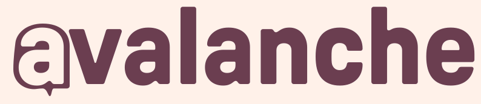
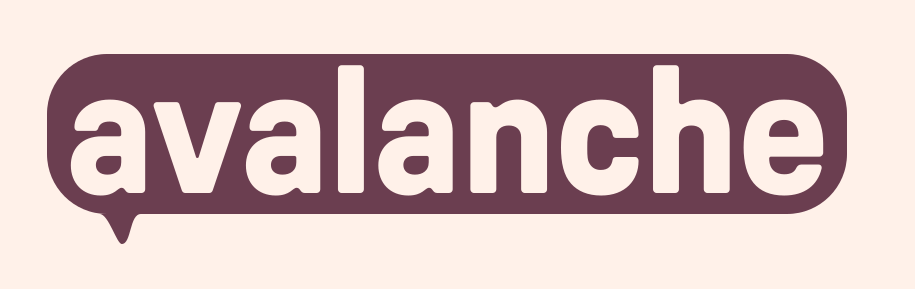

The icon and both wordmarks share one color story now: plum and cream. No gradients. No rose anchor. The entire identity lives in those two values.
A cream outline of a bubble holding a cream 'a', on plum. The most minimal version yet.

The system mark. Plays beside the icon at any scale. Two colors.

The badge. Stickers, merch, announcements. Same two colors.
Rose gradient → plum bubble → cream counter. Three colors, all anchored in the icon. Warmth-forward.
Plum surface → cream lineart. Two colors. Quieter, more confident. Sophisticated over warm.
One primary scale (plum, full 10 steps because it does everything), one neutral scale (sand, 8 steps), three reserved accents (rose, moss, amber).
Rose is no longer primary. It's been reduced from a full 8-step scale to two reserved values, used only for alerts and the occasional heat moment. It no longer appears on default screens.
Plum doubled in size. It went from 6 steps to a full 10-step scale because it now does everything: brand, surface, dark mode, action, type, outgoing messages. The full scale gives you the range.
Sand is unchanged. It was already the warm neutral; it still is. Cream (sand-100) and ink (sand-900) anchor every screen.
Moss and amber are unchanged. Earth-tone status accents. They were sparing then; still are.
Typography is unchanged. Pressura for display, Inter for UI, Pressura Mono / JBM for data. See Foundations v1 for the full type system.
What each token actually does. If you only remember one thing: plum-500 is the brand AND the action color — it does double duty.
IDENTITY
CHAT & ACTION
TYPE
STATUS · USED SPARINGLY
Same chat fragment as before, now plum-dominant. Note that the only rose on the screen is a single notification dot.